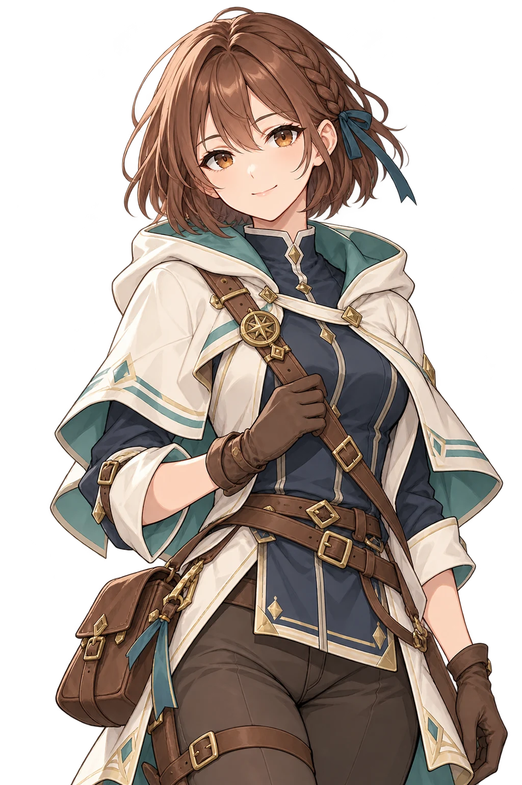

YOUR FIRST ADVENTURER
처음 만나는 모험가, 린
기본 모험가의 제작 미리보기입니다. 보유·출전 기능은 다음 단계에서 연결됩니다.
ON THE MAP
맵의 모습

가벼운 호흡과 옷자락 움직임 · 양쪽 눈을 함께 깜빡이는 대기 동작
IN THE STORY
대화할 때의 모습


한 프레임씩 살펴보기
번호를 누르면 재생을 멈추고 해당 프레임을 보여줍니다.
YOUR FIRST ADVENTURER
기본 모험가의 제작 미리보기입니다. 보유·출전 기능은 다음 단계에서 연결됩니다.
ON THE MAP
가벼운 호흡과 옷자락 움직임 · 양쪽 눈을 함께 깜빡이는 대기 동작
IN THE STORY

번호를 누르면 재생을 멈추고 해당 프레임을 보여줍니다.